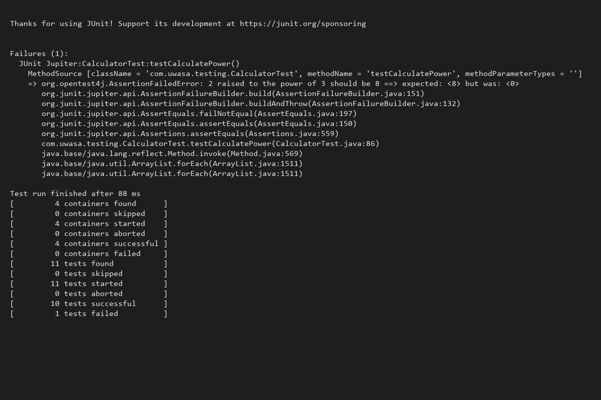
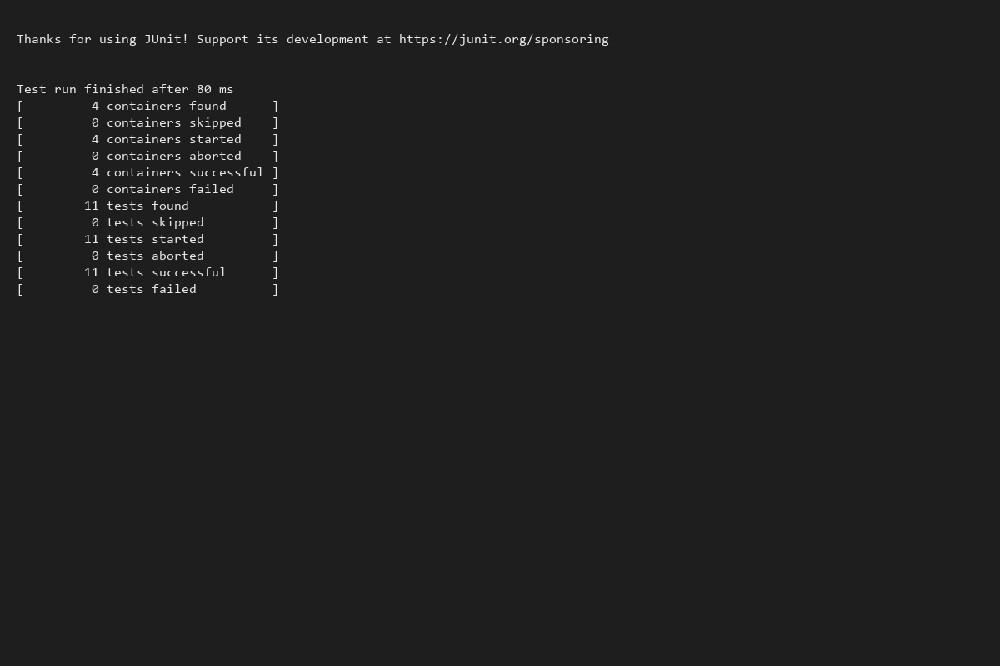

Project Overview
Applied Software Testing Makeup Project utilizing the Smart Calculator System. Focusing on strict mathematical logic implementation using rigorous automated testing standards.
Core Objectives
- ✔️ Secure mathematical operations.
- ✔️ Predictable runtime error handling (e.g., divide by zero).
- ✔️ Reliable feature extensions tracking state.
The TDD Workflow
1. RED
Write an initially failing test that dictates specific anticipated behaviors.
2. GREEN
Implement minimal necessary production code to make the test pass.
3. REFACTOR
Tidying logic ensuring the test metrics continue to yield positive results.
Phase 1: RED
The Power function lacks logic, returning an immediate testing exception.
calculator.java
public int calculatePower(int base, int exp) {
return 0; // Stub for TDD Red Phase
}
Terminal Output

Phase 2: GREEN
Integrating direct implementation math routines to safely conquer expectations.
calculator.java
public int calculatePower(int base, int exp) {
return (int) Math.pow(base, exp);
}
Terminal Output

Summary of Results
- ✓ Full Unit Testing Framework configured via JUnit platform standalone.
- ✓ Safely managed critical mathematical boundaries like Division by Zero checking string returns.
- ✓ Red/Green metrics comprehensively managed for optimal TDD delivery validation.
Presentation Concluded!